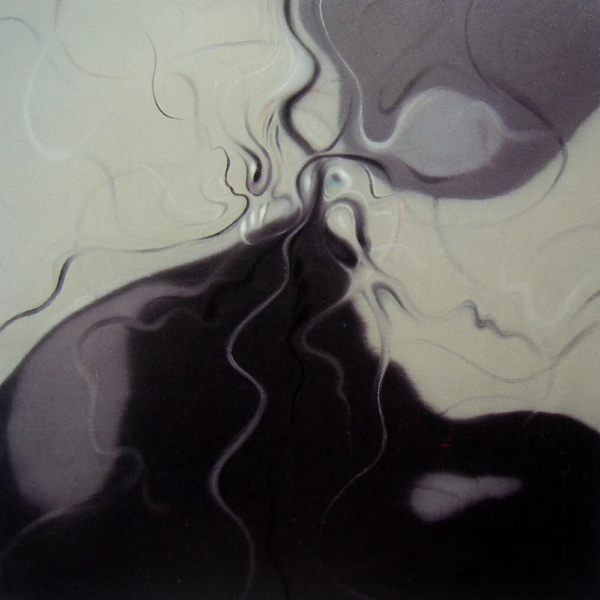

Innenansicht Nr. 3 (Triptychon)
- Werktitel
- Innenansicht Nr. 3 (Triptychon)
- Jahr
- 1996
- Maße
- 50 × 50 cm × 3
- Medium
- wird noch bestätigt
- Preis
- Preis auf Anfrage
Bildbeschreibung (nach dem sichtbaren Bild, keine Aussage des Malers)
Oben und unten liegt je eine große schwarze Fläche, dazwischen ein grauweißes Querband, in dessen Mitte viele feine Linien in einem Brennpunkt zusammenlaufen. Auf den Linien vereinzelt weiße Lichtpunkte und feine orangerote Linien.